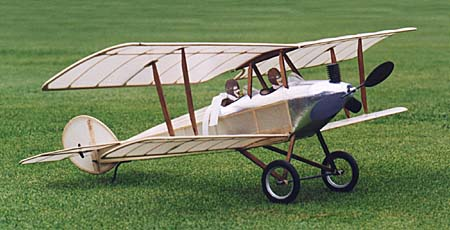
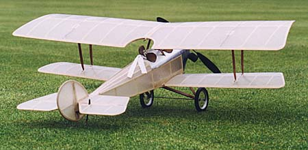
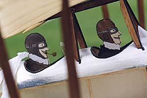

| This model of the 1916 Bellanca CD Tractor Biplane was inspired by a Peanut Scale plan by Don Butman in the first model airplane magazine I ever saw, a copy of Model Builder from October 1972. I have had great success with a rubber powered FF version at that size and decided it would be a fun project for my first slow fly RC model. |
|
Initial test flights occurred on October 27, 1999 outdoors in what seemed like no wind. The first flight was with a 8x50mAh battery. Next I tried a 6x120mAh pack. Performance seemed similar with both batteries. As near as I could tell, the flight was very slow and graceful. Micro turbulence was abundant and made a more accurate flight assessment difficult. With more experience the model has proved itself quite capable outdoors, though is obviously wind limited.
Further testing indoors was a great success. Flight duration is just over 3 minutes with the 50mAh pack. With the larger 6x120mAh pack the initial climb is slightly reduced due to a lower voltage and higher weight, though duration increased to over 9:30. I am now flying with an 8x120mAh pack and am happy with both the performance and flight times over 8 minutes. The model will turn quite sharply and has be flown within a smaller than standard basketball court. |
|  |
|---|
| span: | 33 inches |
| area: | 340 square inches |
| weight: | 6.5 ounces |
| wing loading: | 2.75 oz/sq ft |
| motor: | DC1717 |
| prop: | Braun 26cm x 13cm |
| battery: | 8x50mAh, 6x120mAh, 8x120mAh |
| servos: | Cirrus CS-10bb |
| rx: | Skyhooks and Rigging Hybrid with ESC |
|  | Construction is traditional stick and Japanese tissue, doped with 50:50 non-tautening nitrate. The aluminum cowling was simulated with Coverite's Micafilm, a.k.a. Fibafilm by Solarfilm and is now discontinued. As an alternative, I now recommend aluminum lithoplate. Yes, it is a little heavier, but the weight forward of the CG will help balance the model. The wheels are a pair of prototype 2 3/4 inch wheels which I made, protected by a sprung axle. |
|
The pilots are enlargements of the profile pilots shown on the original peanut plan. If I remember the article correctly, they were the work of Don's son. The drawings were laminated to light 1/8 inch sheet balsa cut to shape, and colored with art markers.
This model was also featured as a construction article in the January 2000 issue of RCMicroFlight. Rolled full sized plans are available for purchase through the Flying Models plans service. Click the email link at the top of the page if you are interested in building your own Bellanca.
Thanks to all who provided inspiration and assistance for this delightful project. - Thayer | |
Other Builders' Models of the Bellanca
Copyright 1999-2020, Thayer Syme. All rights reserved